2.5 Imputation techniques’ comparison in R programming language
Authors: Mikołaj Jakubowski, Marceli Korbin, Patryk Wrona (Warsaw University of Technology)
2.5.1 Abstract
The vast majority of machine learning models do not accept missing values in a given dataset. Unfortunately, in real life problems, some informations are often unavailable. Therefore, we need to come up with a workaround. The range of imputation methods, however, is huge and varies from highly computing power consuming, to really simple ones. To address the problem of choice, especially for inexperienced in machine learning, we demonstrate a comparison of some of the imputation algorithms. These methods can either be easily implemented or are offered by publicly available packages for the R language. They differ in both algorithmic and programming complexity. Moreover, the study is made using sets of data, which represent different shapes and sizes, and different locations and amounts of missing values.
2.5.2 Introduction & Motivation
Nowadays, the problem of missing data has become ubiquitous in our everyday lives in each domain, for example medicine, education, criminology, politics or business affairs. There are three main problems that missing data might cause: a substantial amount of bias, more arduous handling and analysis of the data, and reductions in efficiency. Moreover, many machine learning models cannot be used because of missing data.
Imputation bases on replacing missing data with an estimated value based on other available information. There are numerous kinds of imputation methods which can be divided into simple methods as well as methods involving more sophisticated algorithms. Many programming and statistical environments support data imputation via libraries and pakages. In this work, we have used RStudio due to its numerous packages giving access to implementation of various imputation methods.
In the past, there was little evaluation and testing on available imputation methods. Effectively, data science and statistical modeling are both domains much younger than mathematics or physics. Besides, it is hard to say if an imputation algorithm’s output is the proper one because there is no data to compare with. In order to assess an imputation method, one could make use of some statistical approach like evaluating machine learning predictions, changing data by intentionally removing a part of it, or combining both processes.
In this work, we compare imputation techniques by using predictions of machine learning models, but also by confronting the amount of time each algorithm took to perform an imputation task. The whole evaluation is repeated on several datasets, varying by size and missing data percentage. All these datasets are available online and come from OpenML. Our goal was to find the best and the worst imputation method in function of input data and the amount of time to impute, that is the imputation real-life circumstances.
2.5.3 Methodology
2.5.3.1 Function
In order to study the imputations’ effectiveness, we have developed a special function, called imputeBenchmark. It takes the dataset, the number of iterations, the list of imputation methods and the list of machine learning models as its parameters.
For each imputation method listed, the function carries it out on a given dataset. The operation is run in a given number of iterations, during each of which the length of imputation is measured through reading the current time with the R base function Sys.time, immediately before and after the imputation being performed. After all iterations, the mean time is calculated.
In the next step, every listed machine learning algorithm is tested. The dataset is divided into training data and test data, with a size ratio 9:1. Then, the current model is trained on the former and evaluated on the latter, through the use of mlr functions: makeClassifTask, makeLearner, train and predict. Having the model evaluated on a dataset, we measure its performance by means of accuracy and F1 score. We chose these two measures as the most symmetric ones, while discarding widely used precision and recall, due to the F1 score being more concise and giving just as many useful information on the dataset balance as a harmonic mean of the former two.
All the imputation time and model evaluation score measurements are systematically written down and eventually output in a list of three matrices.
2.5.3.2 Imputation methods
imputeBenchmark implied any possible choice of imputation and machine learning algorithms depending on the user. Nevertheless, throughout the whole time of carrying out the study, we would use the following imputation methods:
- IRMI: during the whole iteration, one variable is used as a response variable, whereas the rest are used as the regressors. The whole information is used to impute the response column (Matthias Templ 2011).
- hotDeck: replacing missing values in an instance with the values present in a similar row. The record to copy values from may be chosen randomly or deterministically (Rebecca R. Andridge 2010).
- k nearest neighbours: a point value is approximated by the values of the closest points, based on other variables (Obadia 2017).
- missForest: a random forest is used as a multiple imputation scheme composed by classification and regression trees. Its error estimates deliver the independent imputation error calculation, without a test set necessary (Daniel J. Stekhoven 2011).
- mean, median or dominant: a simple, easily implementable function, which replaces all the missing values in every column independently, the value choice method being based on the datatype. Continuous features have their NAs replaced by the mean of all the present values; categorical ordinal variables are imputated by the median, while categorical nominal columns become completed with the dominant value among remaining ones.
The first three were imported from the R package VIM, whereas missForest imputation is based on another R package of the same name.
2.5.3.3 Machine learning models
The machine learning algorithms we evaluated during the study are:
- logistic regression (package stats)
- naive Bayesian classificator (package e1071)
- binomial regression (package stats)
- random forests (package ranger)
2.5.3.4 Datasets
We used the following seven datasets available in the OpenML package to carry out all the calculations:
- labor: 17 features, 57 rows, 326 missing values
- colic: 20 features, 368 rows, 1199 missing values
- credit-approval: 16 features, 690 rows, 67 missing values
- hepatitis: 20 features, 155 rows, 167 missing values
- vote: 17 features, 435 rows, 392 missing values
- eucalyptus: 16 features, 736 rows, 455 missing values
- echoMonths: 10 features, 130 rows, 97 missing values
2.5.4 Results
2.5.4.1 Performance for each dataset
All charts are self-explanatory. Based on the results below, and knowing characteristics of a dataset, it should be easy to estimate which method of imputation is the best for a desired use.
2.5.4.1.1 Legend
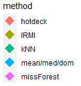
2.5.4.1.2 labor: 17 features, 57 rows, 326 missing values
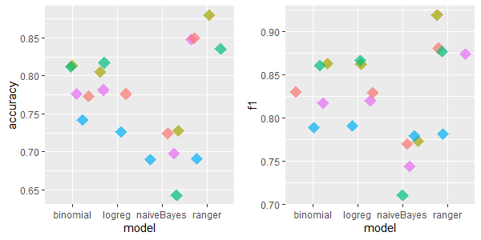
2.5.4.1.3 colic: 20 features, 368 rows, 1199 missing values
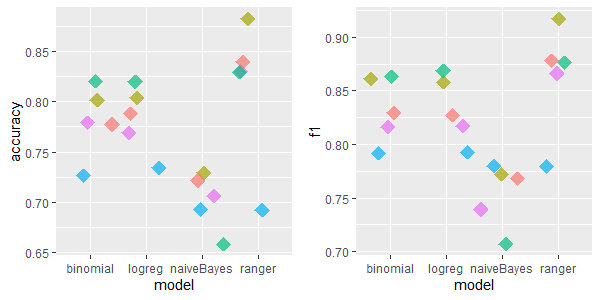
2.5.4.1.4 credit-approval: 16 features, 690 rows, 67 missing values
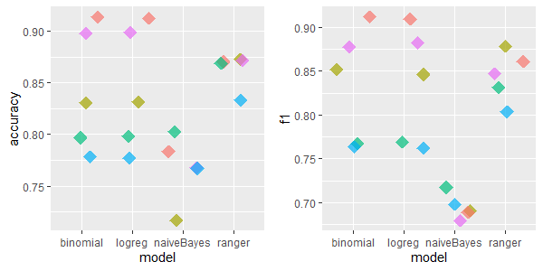
2.5.4.1.5 hepatitis: 20 features, 155 rows, 167 missing values

2.5.4.1.6 vote: 17 features, 435 rows, 392 missing values
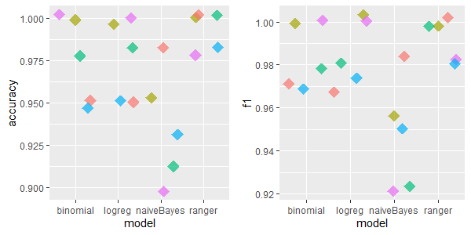
2.5.4.1.7 eucalyptus: 16 features, 736 rows, 455 missing values
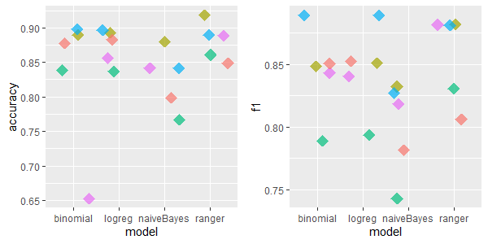
2.5.4.1.8 echoMonths: 10 features, 130 rows, 97 missing values
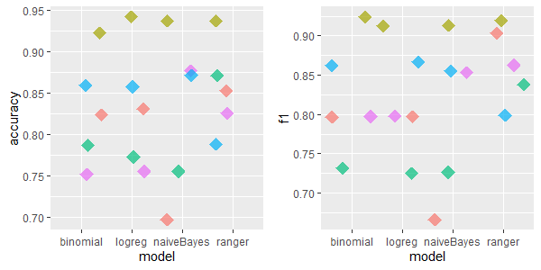
2.5.4.1.9 Overall performance

2.5.4.2 Time measurements
In Average:
- 5,96s - IRMI
- 0,94s - missForest
- 0,22s - hotdeck
- 0,9s - kNN
For the biggest explored dataset highest IRMI time was 17 seconds. Generally none of these algorithms are highly time consuming. However it may be worth to acknowledge, that sometimes if we are dealing with a huge dataset, and we do not dispose a lot of time, IRMI might not be a good choice. Especially that, missForest most often produces better results.
2.5.4.3 Ranking
We also created a leaderboard of imputation methods in function of used machine learning model. We used 2 metrics separately to evaluate classification models - Accuracy and F1 Score. The data was also divided to small and big datasets to determine whether the imputation methods’ scores vary among the size of the dataset.
As small datasets we chose those with indexes 4, 27, 55, 56, 944:
- Accuracy ranking

- F1 Score ranking
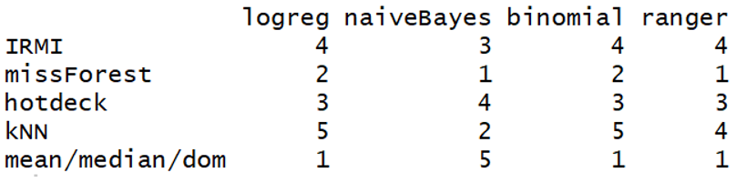
We can deduce from the above ranking that missForest beats other imputation methods when we deal with small data sets. Mean/median/dominant imputation is also convenable in this case - in exception of naiveBayes model. The worst model is
Bigger datasets possess indexes 29, 88:
- Accuracy ranking

- F1 Score ranking
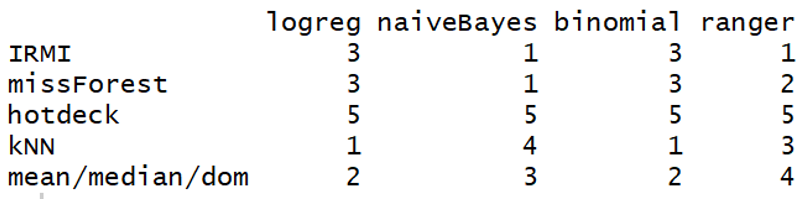
IRMI and kNN revealed to be the most accurate as far as the bigger data sets are concerned. It is also important to notice that hotdeck imputation from VIM package was unanimously the worst independently of used model.
All datasets:
- Accuracy ranking
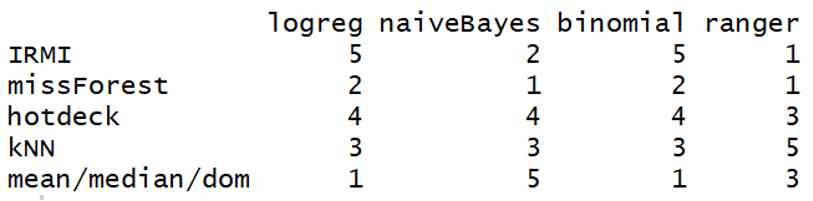
- F1 Score ranking
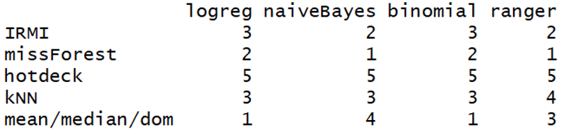
The above ranking shows that the missForest imputation algorithm from the package of the same name has achieved the best scores independently of data set’s size. On the other side, hotdeck performed the worst and the bigger the data set is, the lower its performance was.
2.5.5 Conclusions
From the ranking, one can deduce that depending on data set’s size, missForest, kNN and IRMI imputation achieved the best scores. missForest was the most appropriate to deal with small data sets, while kNN and IRMI were outstanding at bigger data sets’ imputation.
Moreover, if we use random hotdeck imputation from VIM package, the bigger the data set is, the lower this imputation method’s performance is. Enough to say that we gain time in exchange for imputation corectness. That is why an appropriate choice of imputation method is that important and should be made depending on the given task.
References
Daniel J. Stekhoven, Peter Bühlmann. 2011. “MissForest—Non-Parametric Missing Value Imputation for Mixed-Type Data.” Bioinformatics 28 (1): 112–18. https://academic.oup.com/bioinformatics/article/28/1/112/219101.
Matthias Templ, Peter Filzmoser, Alexander Kowarik. 2011. “Iterative Stepwise Regression Imputation Using Standard and Robust Methods.” http://file.statistik.tuwien.ac.at/filz/papers/CSDA11TKF.pdf.
Obadia, Yohan. 2017. “The Use of Knn for Missing Values.” https://towardsdatascience.com/the-use-of-knn-for-missing-values-cf33d935c637.
Rebecca R. Andridge, Roderick J. A. Little. 2010. “A Review of Hot Deck Imputation for Survey Non-Response.” https://doi.org/10.1111/j.1751-5823.2010.00103.x.